教具介紹、詳細功能說明與使用手冊
開發者：楊榮林教授，南臺科技大學電子工程系
教學實踐研究室 P306（電子工程系）
FormativeX AI 協作學習評量與教學分析平台
下載報告範例
以下兩份 HTML 為平台產生的下載報告範例，可開啟於獨立瀏覽器分頁，對照教師端全班分析與學生端個人作答卷的差異。
1. 教具定位
FormativeX 是由南臺科技大學電子工程系楊榮林教授自行設計與實作的課堂形成性評量與教學分析平台，實際應用於 JavaScript 程式設計（五專電子三甲，30D1GH01）課程。作品完整名稱可表述為「AI 協作學習評量與教學分析平台：智慧題庫生成、即時監測、學習診斷與教學決策輔助」。
本作品以 Flask 架構開發，整合學生端線上作答、教師端即時儀表板、題庫管理、課後分析與報告匯出。它要改善的不是單一考試流程，而是傳統紙本小考、通用表單測驗與人工批改所造成的流程繁瑣、資料分散、回饋延遲與難以長期追蹤等問題。
| 模組 | 檔案 | 使用者 | 主要用途 |
|---|---|---|---|
| 學生作答端 | exam.py | 學生 | 登入、選擇測驗、限時作答、提交、查看成績、下載個人作答報告 |
| 教師儀表板 | dashboard.py | 教師 | 題組啟用、測驗伺服器控制、即時監測、錯題分析、成績分布、詳解匯出、成績下載 |
這套系統並不是將現有商業測驗平台簡單套用到課堂，而是針對實際教學現場長期觀察到的問題，利用課餘與下班後時間逐步設計、實作、修正而成的獨立教具。其開發目的，是讓教師能掌握題目生成、測驗環境、資料保存、學習分析與課後回饋的完整流程，而不必受限於外部平台的功能邊界、網路條件或資料格式。
以教材與 AI 工作流程建立題組。
課堂前測或後測中啟動測驗。
教師即時觀察學生狀態與行為。
系統統計成績分布與錯題率。
學生下載報告，教師調整教學。
2. 開發動機與設計理念
FormativeX 的誕生，來自幾個非常具體的教學需求。第一，生成式 AI 普及後，傳統線上測驗若完全依賴外部網站與網際網路，測驗公平性會快速下降。學生在測驗期間只要能連上外部服務，就可能使用 AI 工具查詢答案；但若完全不用數位工具，教師又會失去即時批改、錯題分析與長期追蹤的能力。因此，本系統選擇以「教室區域網路內可獨立運作」作為核心設計，使教師可以在必要時切斷對外網路，同時仍保留數位評量與即時分析。
第二，既有工具如 Zuvio、Firebase 雲端服務、GitHub Pages 或其他外部平台，雖然能處理部分表單、測驗或資料儲存需求，但很難完全符合程式設計課堂中的細緻需求。例如：多於四個選項的題型、依學生與試卷固定亂序、測驗中即時查看每題正確狀態、記錄每題停留時間、即時辨識亂猜行為、匯出個人化作答卷、同時整合多次形成性評量等。FormativeX 因此選擇完全自行實作，讓平台功能能直接回應教學現場，而不是讓教學流程遷就外部工具。
第三，這套教具強調「資料留在教師可掌握的環境中」。學生名單、作答紀錄、成績、IP、作答歷程與刪除紀錄都保存在本機或課程資料夾中，不需要上傳至第三方雲端服務。這對含有個資與學習歷程資料的課堂評量特別重要，也讓教師能依自己的課程節奏備份、整理與分析。
第四，開發此平台的目的不是減少教師參與，而是讓教師能更深入參與教學判斷。AI 可以協助生成題目，但題目是否符合教材、難度是否合理、選項是否具有辨識度、錯題是否代表共同迷思，仍由教師決定。系統負責收集與呈現資料，真正的教學決策仍回到教師身上。
實作規模與內容量統計
以下統計以 formativeX-製作教具 專案為範圍，排除 .venv、快取、學生提交紀錄與刪除備份等執行期資料，呈現這套教具的程式實作量、評量內容量與輸出教材量。統計日期為 2026-05-17，行數採實體行數估算，因此包含必要的空白、註解與版面結構。
| 項目 | 數量 | 代表意義 |
|---|---|---|
| Python 後端與工具程式 | 37 個檔案，11,888 行 | 包含學生作答伺服器、教師儀表板、測驗狀態控制、題目解析、批改、報告產生、下載與題庫輔助流程。 |
| HTML / Jinja 教師端與學生端介面 | 9 個樣板，10,037 行 | 支撐教師 Dashboard、學生登入與作答、即時監測、分析頁面、下載報告與多種課堂操作畫面。 |
| JavaScript 互動邏輯 | 4,556 行內嵌於樣板中 | 負責倒數計時、題目導覽、即時更新、作答狀態呈現、圖表互動、教師端控制與下載操作；目前未拆成獨立 .js 檔。 |
| 評量與題庫內容 Markdown | 316 個檔案，174,461 行 | 包含課程 assessments、共享 JavaScript 題庫與題目工作檔，反映教師將教材、AI 協作出題、人工審核與單元評量長期累積為可維護內容庫。 |
| 可辨識題目小節 | 8,543 題左右 | 依題目標題格式估算，呈現題庫規模與多版本、多單元形成性評量的建置工作量。 |
| 已產生下載測驗 / 報告 HTML | 34 份，19,874 行 | 代表系統已能把測驗結果轉成教師與學生可直接閱讀的教學文件，並可在課後複習、補救教學與申請資料中重複使用。 |
| 已封裝下載測驗 ZIP | 34 份 | 顯示平台不只線上施測，也支援將試卷與結果封裝保存，方便課程檔案管理與離線備查。 |
這些數字說明 FormativeX 不是單一網頁或臨時測驗腳本，而是一套由授課教師在正常授課、行政與研究工作之外，利用大量下班後與假日時間逐步完成的完整教學系統。AI assistant 與 vibe coding 的快速迭代方式協助縮短摸索時間，但系統需求判斷、課堂流程設計、題目品質檢查、資料欄位取捨、學生端操作細節與教師端分析邏輯，仍由開發者依真實教學現場反覆修正。這也是本教具選擇完全 standalone 的原因：不依賴 Zuvio、Firebase、GitHub 或其他外部平台，教室內只要有區域網路即可運作，必要時可與外網隔離以限制測驗期間的 AI 存取。
3. 教學特色
多選項題型
支援 A-Z 任意選項數，可製作四選一、五選一、六選一或七選一題目，降低純猜測取得高分的機率。
封閉式區域網路
平台可在教室 LAN 運作，不依賴外部商業測驗平台；正式施測可中斷外網以限制測驗期間的 AI 存取，同時保留數位評量與即時分析能力。
即時學習歷程
記錄題目停留時間、答案修改、回看題目與作答進度曲線，讓教師掌握過程而不只看分數。
測驗轉化為教材
測驗結束後即可匯出統計、詳解與學生個人化報告，成為課後複習與補救教學資料。
4. 系統架構與資料流程
formativeX-製作教具/
├── exam.py
├── dashboard.py
├── templates/
├── assets/
└── courses/
└── <course_id>/
├── assessments/ # Markdown 題庫
├── students/ # 學生名單
├── submits/ # 學生提交結果
├── active_logins/ # 進行中測驗 session
├── downloads/ # 匯出報告
├── deleted/ # 刪除紀錄保留區
└── assets/
├── course_config.json
└── messages/題庫格式
### 1. 題目文字
題目敘述
(A) 選項 A
(B) 選項 B
(C) 選項 C
(D) 選項 D
(E) 選項 E
(F) 選項 F
答案: (E)學生提交後，系統會在 courses/<course_id>/submits/<exam_tag>/<student_id>.json 儲存結果，包含學號、姓名、時間戳、IP、題目順序、答案、批改結果、分數與簽章。
獨立部署特性
FormativeX 的執行不需要 Zuvio、Firebase、GitHub、雲端資料庫或第三方測驗平台。只要教室內有一台可執行 Python/Flask 的電腦作為伺服器，學生與教師端瀏覽器能連到同一個區域網路位址，即可完成測驗流程。
這種設計特別適合生成式 AI 時代的教室測驗：教師可保留數位系統的即時分析能力，同時透過切斷外網限制學生在測驗中使用 ChatGPT、搜尋引擎或其他線上資源。
5. 功能總覽
| 功能 | 說明 | 教學價值 |
|---|---|---|
| 題組啟用 | 教師在 Dashboard 選擇本次開放題組 | 快速切換週次、單元與難度 |
| 測驗伺服器控制 | 從 Dashboard 啟動或停止學生作答端 | 降低部署與課堂操作負擔 |
| 單一登入限制 | 同一學號同一時間只允許一個裝置登入 | 降低冒名與重複作答 |
| 題目順序亂序 | 依 student_id + exam_file 產生固定亂序 | 降低鄰座抄襲 |
| 即時狀態卡 | 顯示未開始、作答中、已繳交 | 教師掌握全班進度 |
| 行為標記 | 根據節奏、停留時間、變更行為顯示提示 | 協助辨識亂猜或異常作答 |
| 錯題分析 | 依錯誤率列出題目與答錯人數 | 立即進行補救教學 |
| 題目詳解匯出 | 下載 Markdown / HTML / ZIP | 建立課後複習教材 |
| 成績下載 | 匯出 JSON / HTML / Excel | 支援期末成績整理與長期分析 |
6. 教師端使用手冊
啟動教師儀表板
cd formativeX-製作教具
COURSE_ID="py1b2026spring" python3 dashboard.py預設教師端位址為 http://<server-ip>:5050。教師可從儀表板選擇班級、設定題組、啟動或停止學生作答服務。
啟用題組
- 進入 Dashboard 主畫面。
- 使用 New、All、Picked Up、Completed 等狀態篩選。
- 使用單元編號篩選需要的題組。
- 勾選本次要開放的測驗題組。
- 儲存設定後，學生端只會顯示已啟用題組。
啟動學生作答服務
EXAM_SIGNATURE_KEY="your-strong-random-secret" \
COURSE_ID="py1b2026spring" \
python3 exam.py --time 20即時監測與管理
「測驗狀態」分頁以學生卡片呈現未開始、作答中與已繳交狀態；點選卡片可查看個別學生作答細節。「管理測驗」分頁可強制放棄、強制繳交，或設定最後 N 分鐘。
匯出詳解與成績
「題目詳解」可匯出單一或多題組 Markdown、HTML 或 ZIP。「成績下載」可選擇多份題組，設定完成題數權重與答對題數權重，並輸出 JSON、HTML 或 Excel。
成績 = min(a × 完成率 + b × 答對率, 100)7. 學生端使用手冊
登入
- 開啟教師提供的學生端網址，預設為
http://<server-ip>:5000。 - 輸入學號。
- 系統自動顯示姓名，確認身份。
- 選擇可作答測驗並進入。
作答
學生一次只看到一題；左側顯示測驗名稱、姓名、學號與剩餘時間。學生可切換上一題、下一題，也可勾選「作答後自動下一題」。
交卷與下載個人報告
提交後系統立即批改，顯示答對題數與表現評語。學生可下載完整作答卷，內容包含個人答案、正確答案、各題對錯與全班相對表現。
8. 截圖導覽與功能說明
以下截圖說明不只描述畫面元件，也補充開發者設計這些功能時的教學意圖。FormativeX 的重點不是把紙本小考搬到網頁上，而是把題庫生成、封閉式區域網路施測、即時監測、錯題分析、個別化回饋與長期學習資料累積，整合成教師可自行掌握的教學工具。
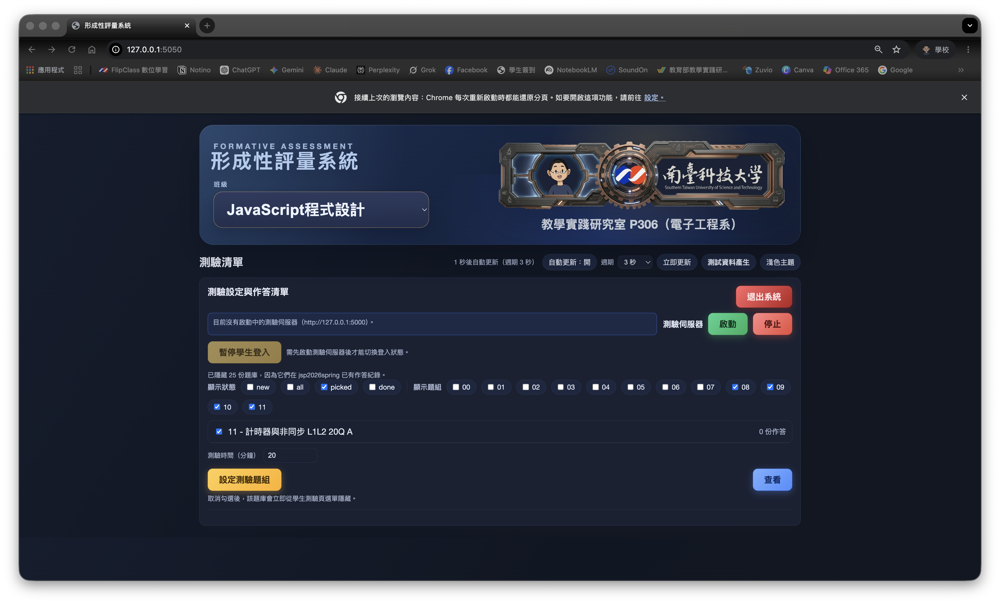
教師端主畫面是課程測驗管理中心，可選擇班級、指定題組、設定測驗時間並啟動學生作答服務。它呈現本系統的核心設計意圖：教師不需登入外部平台、不需依賴雲端測驗服務，也不需將學生資料交給第三方工具。
此頁同時說明 FormativeX 不是一次性小考工具，而是支援整門課長期題庫累積、週次單元、形成性評量、期中期末複習與跨班級使用的教學平台。
開發者刻意把「選題、啟動、查看、分析」放在同一個入口，是因為課堂現場沒有時間在多個平台之間切換。教師只要在教室內啟動服務，學生即可在區域網路中作答；即使外網中斷以限制 AI 存取，測驗流程仍能完整運作。
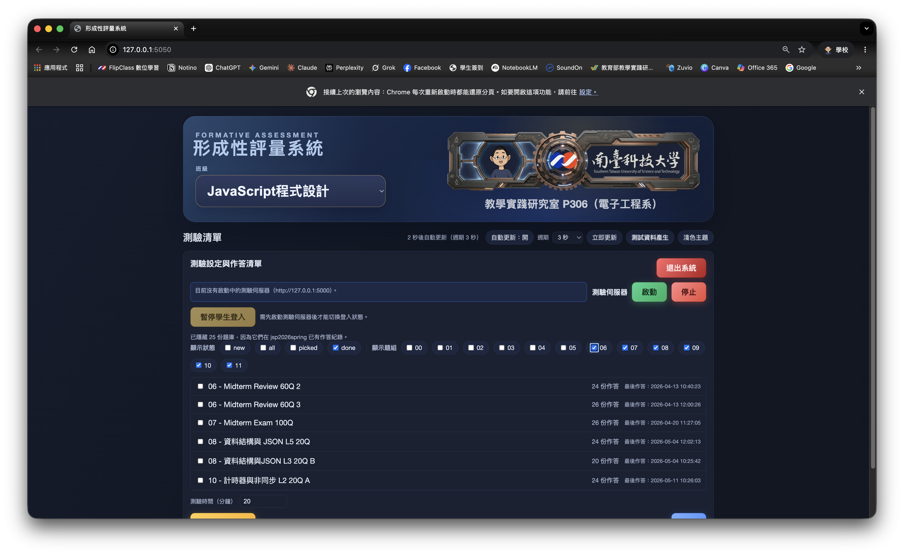
題組可依 New、All、Picked Up、Completed 與單元編號過濾，降低大型題庫下的操作負擔。00、01、02 等編號對應不同教學 Unit，每個 Unit 底下可能有多份不同難度、版本或選項數的題組。
此功能讓教師在課前快速定位本週題組，避免誤選、重複施測或被大量題庫淹沒。
這個介面背後的開發意圖，是讓 AI 協作產生的大量題目能被穩定管理。若題庫只是檔案堆疊，久了會失去可用性；因此系統必須能依單元、狀態與本次選取情境快速篩選，讓高頻率形成性評量可以真正持續整學期。
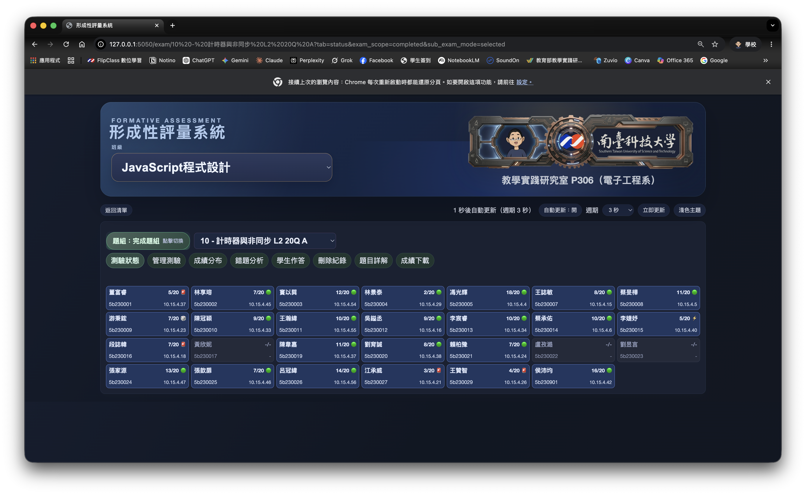
每張卡片代表一位學生，教師可即時看到登入、作答、繳交、IP、進度與目前答對題數。即使教室已切斷外網，教師仍能在區域網路中掌握全班狀態。
卡片顏色、IP 與行為標記可協助教師定位學生、辨識遲到或快速亂猜等狀況。此畫面也支援以課前短測鼓勵準時到課的教學策略。
開發者希望教師在測驗進行中就能做教學判斷，而不是等所有學生交卷後才看到結果。這使形成性評量能成為課堂當下的觀察工具：誰還沒到、誰進度異常、誰可能需要提醒，都可以立即處理。
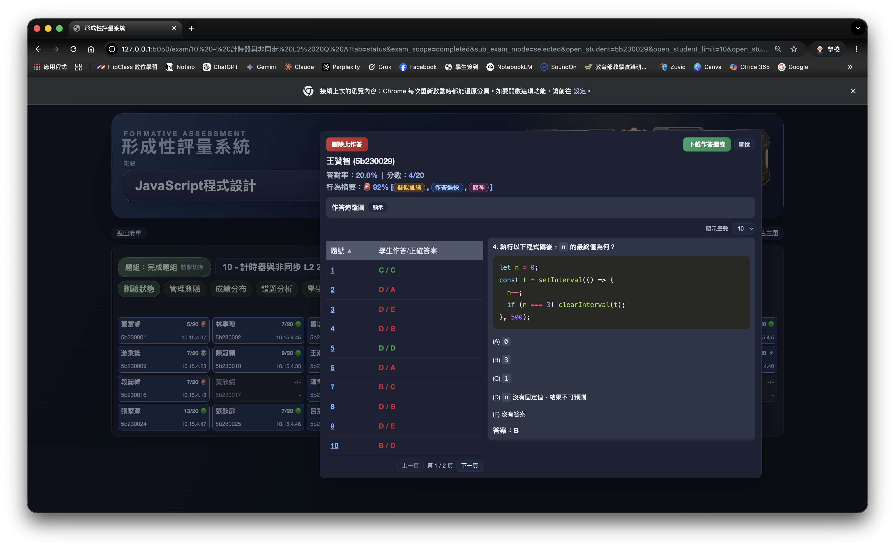
教師可查看個別學生各題對錯與題目內容，在測驗過程中進行即時診斷。若學生極短時間內完成多題且正確率偏低，系統可提示可能存在猜測行為。
此提示不是為了批評學生，而是讓教師能引導學生理解：學習不能只靠運氣，願意閱讀題目與理解概念才會反映在長期表現上。
這個功能的設計意圖，是把「成績」拆解成可討論的學習證據。教師可以點開單一題目與學生作答，直接針對錯誤概念進行提醒，也可以把高錯誤率題目轉成全班共同討論素材。
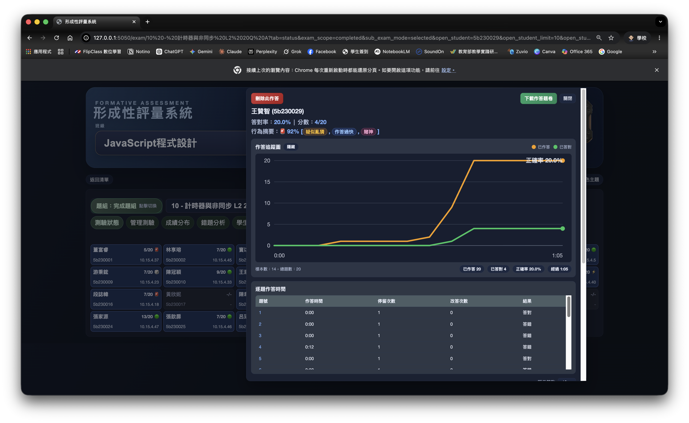
系統記錄作答累積曲線與答對題數變化，協助辨識快速猜題、遲到壓力或時間不足造成的作答模式。
它也記錄每題停留時間、是否返回前題、是否修改答案，以及哪些題目停留異常。測驗結果因此不只是答對或答錯，而是可觀察學生如何作答。
開發者特別重視「學習歷程」而不只重視分數，是因為程式設計學習常需要看推理過程。學生答錯可能是完全不懂，也可能是時間不足、讀題太快或在關鍵題目猶豫；曲線資料能讓教師更公平地解讀學生表現。
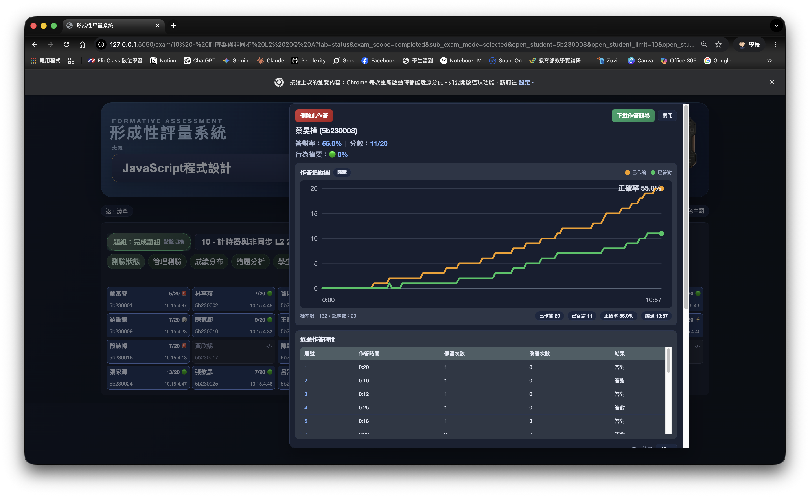
高表現學生的停留時間可反映題目認知負荷，也能回饋教師檢查題目難度。基礎題通常快速完成，程式閱讀、流程推論或非同步執行題則需要較長思考。
當多位高表現學生都在同一題停留較久，代表該題可能具有較高思考負荷；若反覆修改，則可能需要檢查選項設計。
這個畫面也反映開發者的另一個意圖：系統不只用來找出低分學生，也用來理解高表現學生如何思考。透過高表現者的停留時間，教師可以反推題目難度與認知負荷，進而修正題組設計。
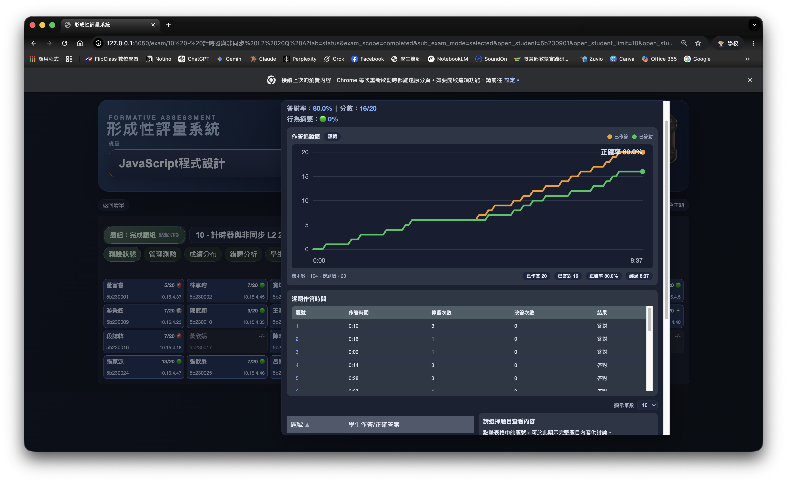
曲線變化可看出學生在高難度概念處速度下降與反覆確認。以 JavaScript 非同步程式設計為例，學生需理解 event loop、callback、Promise 與 setTimeout 的執行順序。
長期累積此類資料後，教師能觀察學生是快速決策型、細心確認型，或在特定概念上需要更深入引導。
開發者希望這些資料能補足單次考試看不到的差異。兩位學生都可能拿高分，但一位可能快速判斷、另一位可能慢慢驗證；長期曲線能幫助教師做更合適的個別化輔導與分組安排。
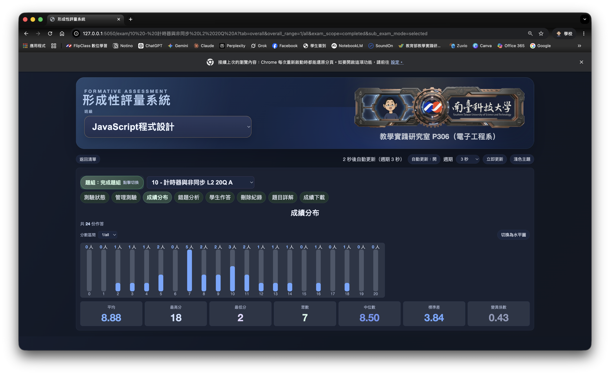
成績分布協助教師判斷題組難度、鑑別度與學生能力層次。形成性評量的目的不是把學生考倒，而是讓教師知道哪些學生真正閱讀與理解，哪些學生仍在猜測。
此頁也呼應 L1-L5 分級題組設計：基礎學生有合理得分機會，高成就學生也能受到挑戰，題組才能支援補救與延伸教學。
開發者設計多選項題型與分布分析，是為了降低「運氣型得分」對判讀的干擾。若純猜測也能取得不低分數，教師就無法知道學生是否真正理解；分布圖讓題組鑑別度能被立即檢查。
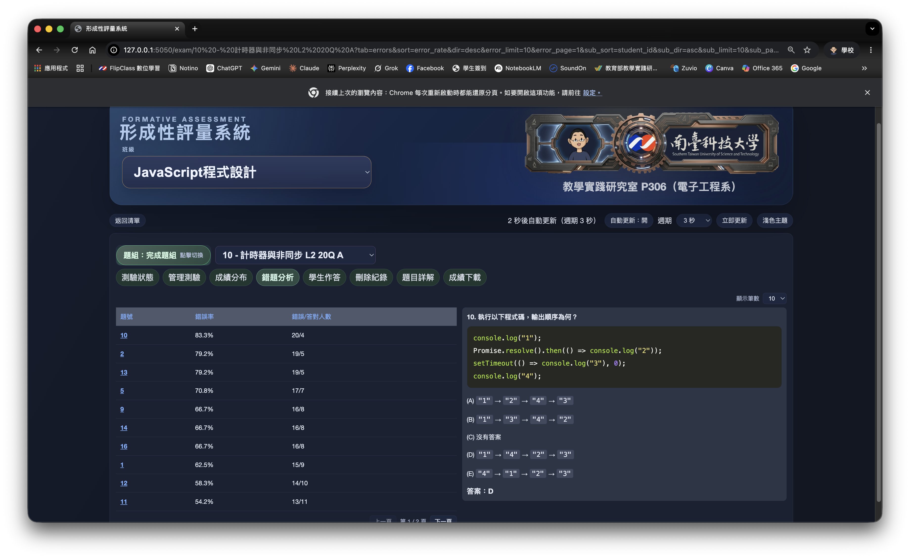
依錯誤率排序題目，教師可立即找出全班共同困難概念並進行補救教學。若 Promise 與 setTimeout 題目錯誤率偏高，教師可立即回到 event loop、non-blocking 與 callback 排程重新講解。
這讓測驗成為教學的一部分。學生剛作答完時仍記得自己的判斷，此時立即討論錯誤原因，比隔週才檢討更有效。
此功能的開發意圖是縮短「發現問題」到「教學補強」之間的時間。傳統紙本小考常要等批改完成才知道錯題；FormativeX 讓教師在同一堂課內完成診斷與補救。
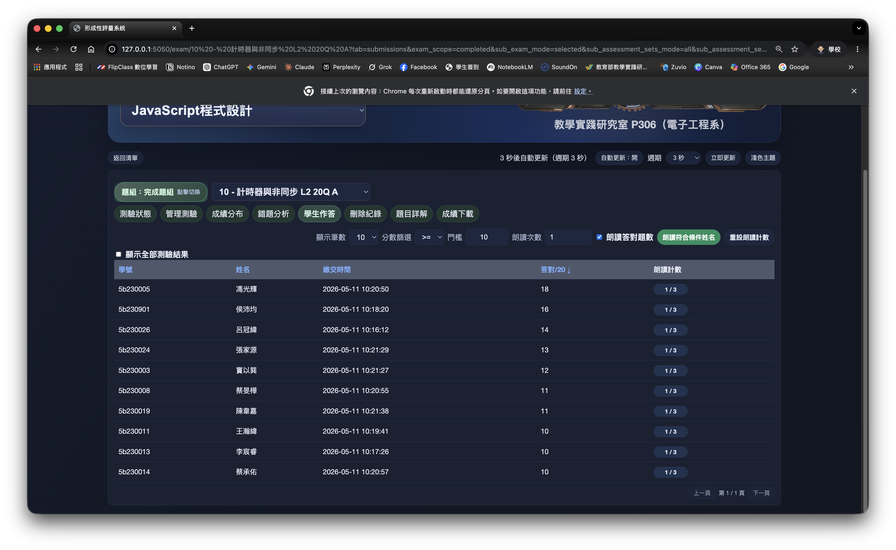
系統可朗讀達標學生姓名與答對題數，形成課堂中的正向競合與學習投入感。教師可設定達標門檻，例如 20 題中答對 15 題以上。
此功能說明自行開發的彈性：教師可以把課堂中有效的互動策略直接做進系統，例如達標朗讀、朗讀次數限制，以及多份測驗合併後再篩選。
開發者的意圖不是製造高壓競爭，而是讓努力被看見。對許多安靜學生而言，被系統在全班面前朗讀姓名與成績，是一種明確的正向回饋，也能讓班級形成「認真作答是主流」的氛圍。
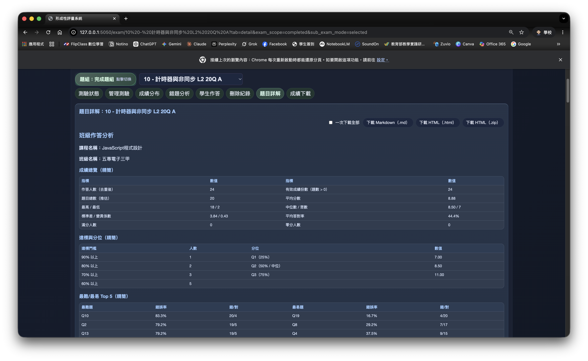
教師匯出的全班統計報告包含作答人數、平均答對率、分數區間與各題錯誤率。它可判斷題組是否過難、是否拉開程度、哪些題目具有鑑別度。
每一次小測驗因此不再是課堂中的一次性活動，而會變成後續課程網站、期中考複習與補救教材的一部分。
開發者希望測驗資料不要停留在系統後台，而是能被轉化為可閱讀的教學文件。教師下載後可分享給學生，讓全班知道哪些概念需要複習，也讓學生理解自己的表現位於班級分布中的哪個位置。
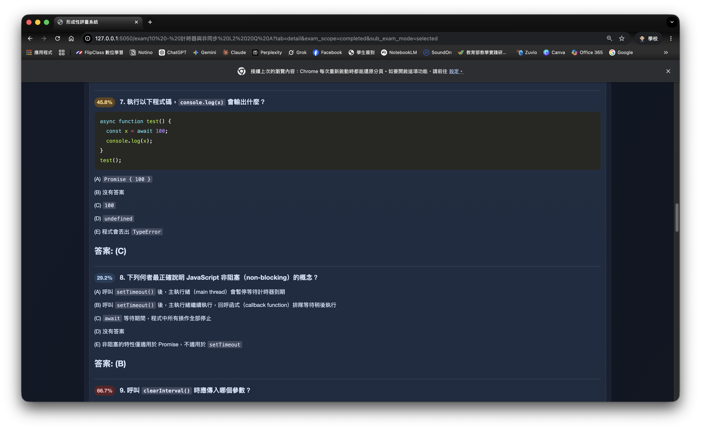
匯出報告逐題列出題目、正確答案與分析資訊，支援課後複習。學生可對照個人作答與全班錯誤率，判斷錯誤是個人弱點或全班共同困難。
這種設計反映開發者對「考後學習」的重視。測驗不是結束於交卷，而是要回到教材、課堂討論與下一次評量；詳解報告讓學生能把錯題變成可追蹤的複習任務。
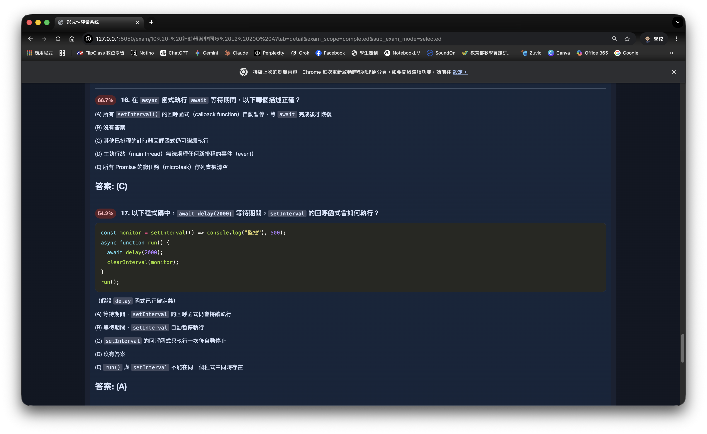
高錯誤率題目可成為後續補充教材、複習課或期中期末命題參考。報告讓平台形成「測驗、分析、回饋、複習、再評量」循環。
在 JavaScript 課程中，學生可能在期中考前已完成數百題形成性評量；期中考再整理、變化與挑選題目，使學生仍需真正理解概念，而不是背答案。
開發者刻意讓報告包含全班統計與題目內容，是為了讓學生不只知道「我錯了」，也知道這題在全班中屬於個人弱點或共同難點。這能提升學生複習時的優先順序判斷。
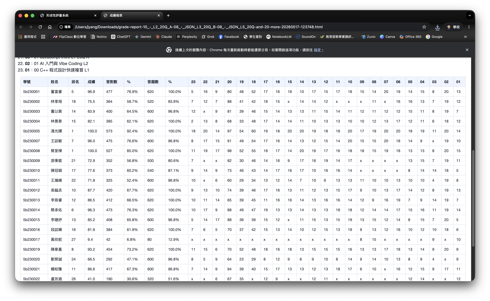
長期成績下載功能整合多份題組，呈現完成率、答對率與學生長期穩定度。當學生累積完成數百題形成性評量時，資料不只代表分數，也代表出席、準時、持續投入與學習穩定度。
教師可進一步觀察學生學習風格：快速果決、慢而細心、特定單元弱點或長期穩定度，作為分組、輔導與教學調整依據。
此功能回應開發者最核心的教學意圖：不要用一次期中考或期末考決定學生樣貌，而要從整學期高頻率、低風險的形成性評量中觀察學生。長期資料能支援補救教學、分組策略與個別化輔導。
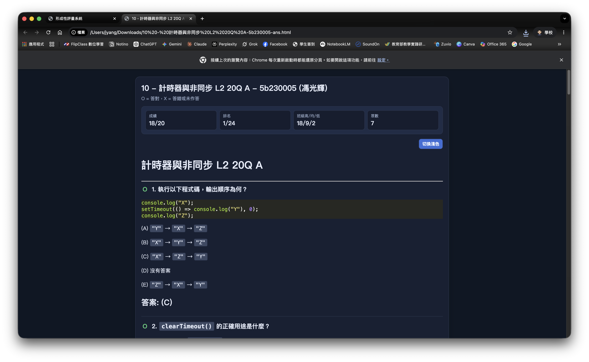
學生交卷後可取得答對題數、相對排名與全班統計。即時回饋讓學生在剛完成題目、仍記得思考過程時，立即理解自己的表現位置。
開發者設計個人化報告，是希望學生不必等待教師批改或公告成績，就能立刻知道自己表現如何。這讓學生在學習動機仍存在時，馬上進入自我檢討與修正。
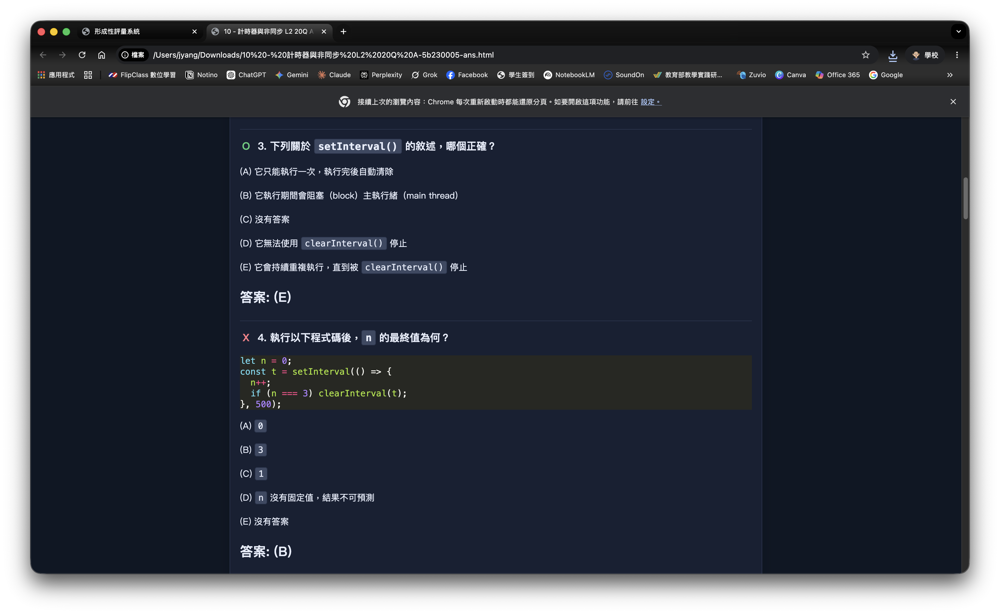
個人報告逐題標示答對與答錯，並呈現正確答案。學生可辨識哪些題目是概念不清、哪些只是粗心，並回到教材或課堂筆記重新理解。
這份報告的意圖是把測驗結果變成學生自己的複習材料。學生可以帶著錯題回到教材、範例與課堂說明，而不是只看到一個分數後就結束學習。
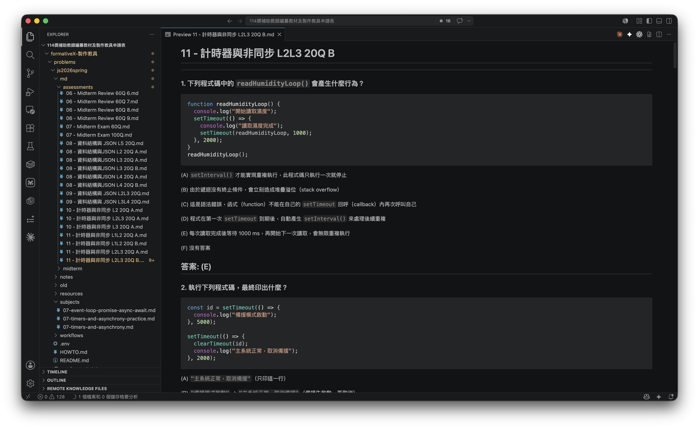
教師可依教材、Lecture Notes、歷史題組與難度需求產生新題目，並進行人工審核。這張圖呈現本教具背後大量下班後開發與整理工作的核心：若要長期每週前測、後測與單元測驗，必須有穩定產生高品質題組的流程。
AI 被納入可控、可驗證、可維護的出題 SOP。它提高題組擴充效率，但題目品質、課程目標、難度配置與最後判斷仍由教師負責。
開發者的意圖不是讓 AI 取代教師，而是讓 AI 成為教師可管理的助教。教材來源、題目難度、選項數、是否混合 L2/L3、題目是否合理，最後仍由教師決定；系統只是讓這個流程可以規模化、可重複、可追蹤。
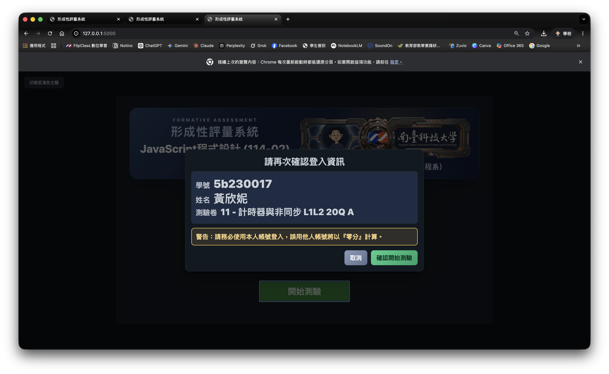
學生輸入學號後，系統顯示姓名供確認，並使用單一登入限制降低重複登入風險。登入流程刻意保持簡潔，符合短時間課堂測驗需求。
學生不需登入 Zuvio、Google、GitHub 或其他雲端服務，也不需要對外網路。這降低操作門檻，也減少測驗期間接觸外部 AI 或搜尋資源的機會。
開發者沒有加入複雜帳號密碼流程，是因為教室短測驗需要快速進入狀態。身份確認、單一登入限制與教師端 IP 觀察已能滿足現場管理需求，同時避免外部帳號系統帶來額外摩擦。
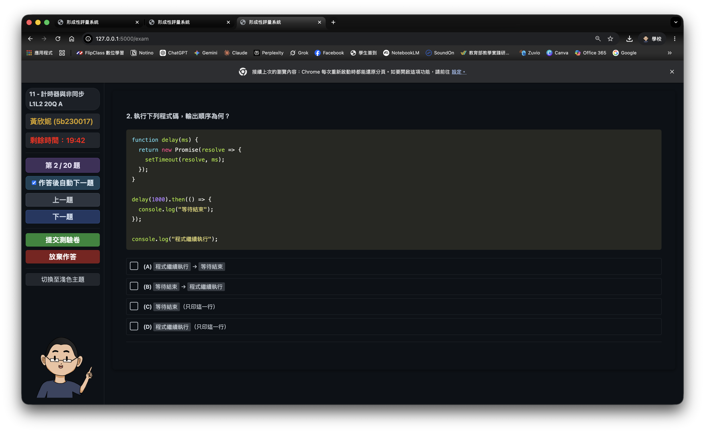
學生端以單題模式呈現，顯示選項、剩餘時間與導覽按鈕。單題模式加上區域網路封閉環境，可降低題目外流與即時查詢答案的可能性。
學生端與教師端同步互動，教師可延長、縮短或強制繳交；系統也能記錄停留、猶豫與答案修改，形成學習歷程資料。
單題顯示是刻意設計，而不是介面限制。開發者希望學生把注意力放在當前題目，同時降低一次複製整份試卷去詢問外部 AI 的風險；這與封閉式區域網路施測共同形成公平性設計。
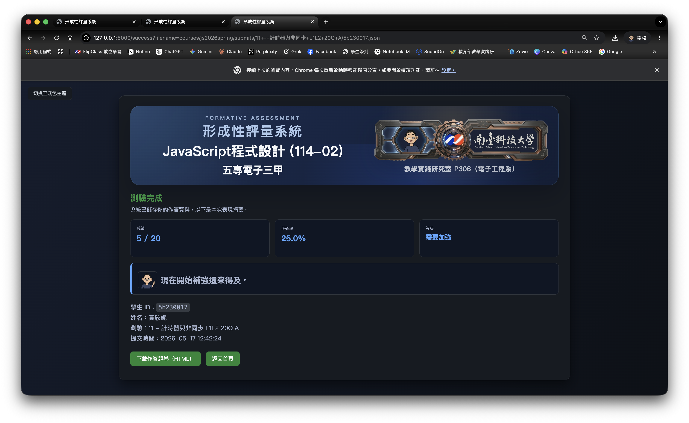
提交後立即顯示成績與回饋，並提供下載作答卷功能。學生不需等待人工批改，教師也能在同一堂課內完成施測、回饋與討論。
此功能的意圖是讓回饋即時發生。形成性評量如果回饋太晚，學生已經忘記自己的思考過程；立即顯示結果與下載入口，能把作答經驗轉成後續複習動機。
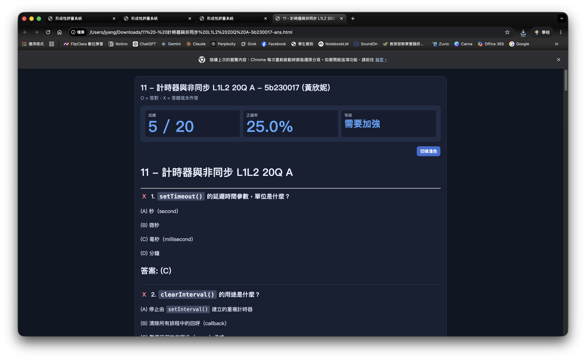
下載後的個人報告列出每題作答狀態、正確答案與結果。它與教師端全班錯題報告互補：學生看個人弱點，教師看共同弱點。
開發者希望學生不只依賴教師課堂講評，也能保有自己的學習紀錄。這份報告讓學生在課後自主檢討，也讓之後準備期中期末時能回頭查看自己曾經錯在哪些概念。
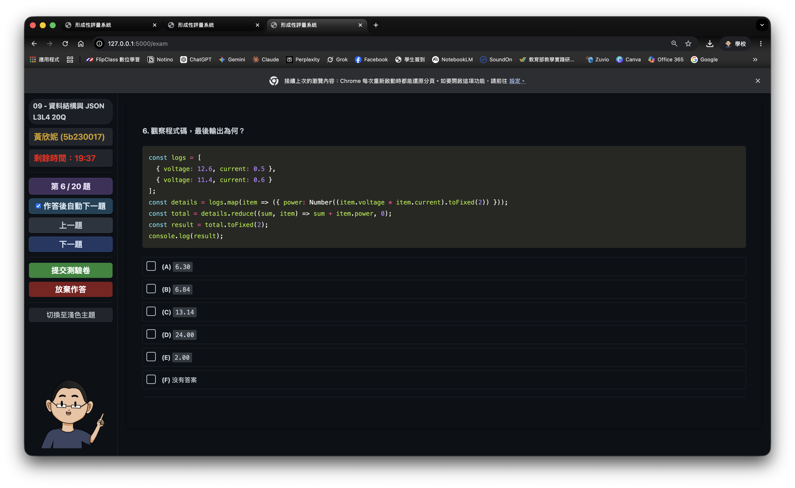
六選一題型降低純猜測分數，讓理解與隨機作答者產生明顯差異。FormativeX 從底層支援 A-Z 選項，是因為教師希望評量結果更接近學生真實理解，而不是被運氣放大。
多選項題型、題序亂排、單題顯示、區域網路封閉施測與即時學習歷程分析，共同構成 FormativeX 的評量公平性設計。
這項設計源自開發者對實際課堂的觀察：短題組若採四選一，猜測仍可能得到不低分數；六選一或七選一能讓願意閱讀、理解與推理的學生被清楚區分，也讓教師的後續分析更可信。
9. 建議教學流程
課前
- 依教材與學習目標建立或更新題組。
- 使用 AI 工作流程產生候選題目。
- 教師人工審查題意、答案與難度。
- 將題庫放入
courses/<course_id>/assessments/。 - 在 Dashboard 啟用本次測驗題組。
課中
- 啟動學生作答服務，讓學生完成前測或後測。
- 教師即時查看未到、遲到或作答異常情況。
- 使用錯題分析與個別學生歷程進行補救教學。
課後
- 匯出題目詳解與測驗結果。
- 將報告上傳課程網站供學生複習。
- 分析長期完成率、答對率與穩定度，規劃下一次教學調整。
10. 維運與注意事項
submits/、active_logins/可能含有個資，應妥善保存。- 正式測驗建議使用固定
EXAM_SIGNATURE_KEY。 - 若啟用 IP allowlist，需確認教室教師端與管理端 IP 在允許清單內。
- 刪除作答紀錄時系統會搬移至
deleted/，但仍建議定期備份。 - AI 生成題目必須經教師人工審核，尤其是程式輸出、非同步流程、選項唯一性與答案一致性。
- 課堂施測不需 Zuvio、Firebase、GitHub 或其他外部雲端平台；這些工具即使可作為開發或備份輔助，也不是系統運作條件。
11. 結語
FormativeX 將 AI 題組生成、區域網路測驗、即時監測、學習歷程分析、錯題診斷、成績下載與學生個人化回饋整合為一套完整教具。它的價值不只在於自動批改，而在於讓教師能在課堂當下掌握學生理解狀況，立即調整教學，並把每一次小測驗轉化為可累積、可分析、可回饋的學習資料。
這套系統也說明了一個明確的教學立場：面對 AI 時代，教師不應只是在既有工具中被動選擇，而可以依照自己的課程、學生與教室條件，建立真正符合教學現場的工具。FormativeX 完全由教師自行開發與維護，能在教室區域網路中獨立運作，必要時可與外網隔離，以限制測驗期間的 AI 存取，同時保留數位評量最重要的即時回饋與長期分析能力。